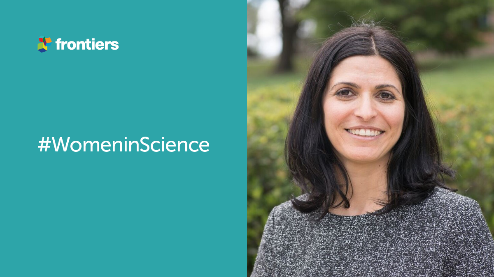

Dr. Gal Winter – Balance is Key #WomeninScience
To coincide with the International Day of Women and Girls in Science, Frontiers has today launched a brand new blog series focusing on just that.Over the next year, we will be interviewing and publishing a series of Q style interviews with inspiring female researchers from within the Frontiers community about their careers, roles, and views of science.Stay tuned!
Today, journal specialist Leticia Nani Silva speaks to Dr. Gal Winter, a lecturer at the University of New England in Australia.Dr. Winter’s research focuses on the microbiome and how it affects the brain and neurological disorders.Apart from her impressive academic record, Dr. Winter is incredibly interested in the principles of yoga and balance.In her interview we discuss the importance of that balance within the world of academia and within the ‘working from home’ lifestyle.
aperture':'0','credit':'','camera':'','caption':'','created_timestamp':'0','copyright':'','focal_length':'0','iso':'0','shutter_speed':'0','title':'','orientation':'0'}' data-image-title='womaninscience' data-large-file='https://frontiersinblog.files.wordpress.com/2021/02/womaninscience.png?w=940' data-medium-file='https://frontiersinblog.files.wordpress.com/2021/02/womaninscience.png?w=300' data-orig-file='https://frontiersinblog.files.wordpress.com/2021/02/womaninscience.png' data-orig-size='1200,675' data-permalink='https://blog.frontiersin.org/womaninscience/' sizes='(max-width: 1024px) 100vw, 1024px' src='https://frontiersinblog.files.wordpress.com/2021/02/womaninscience.png' srcset='https://frontiersinblog.files.wordpress.com/2021/02/womaninscience.png?w=1024 1024w, https://frontiersinblog.files.wordpress.com/2021/02/womaninscience.png?w=150 150w, https://frontiersinblog.files.wordpress.com/2021/02/womaninscience.png?w=300 300w, https://frontiersinblog.files.wordpress.com/2021/02/womaninscience.png?w=768 768w, https://frontiersinblog.files.wordpress.com/2021/02/womaninscience.png 1200w'>
Posted On: 2021-02-11T00:00:00

Content Date: 2021-02-11
Download Date: 2021-07-10
Document ID: L0C04F2C7